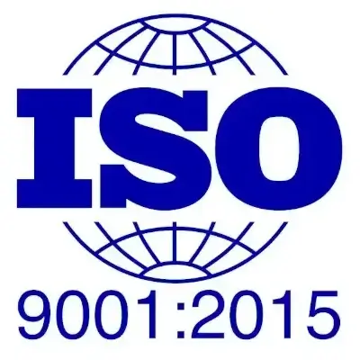
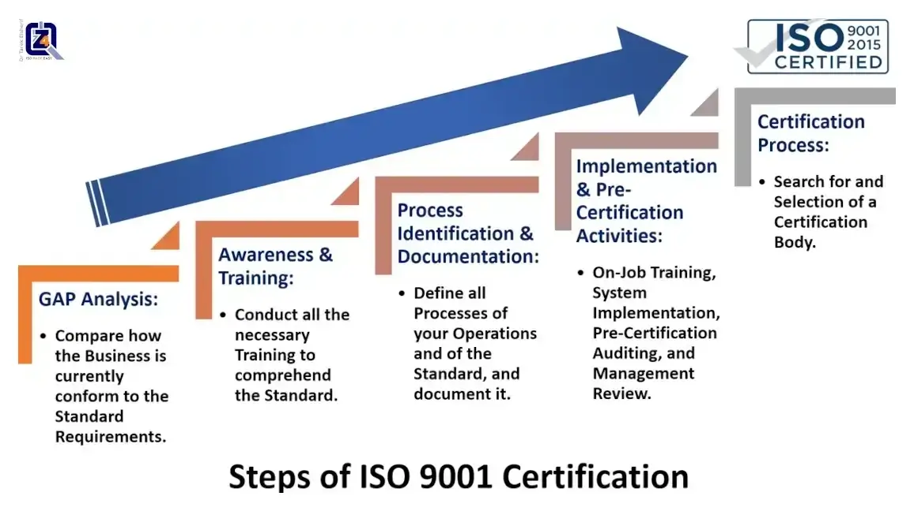
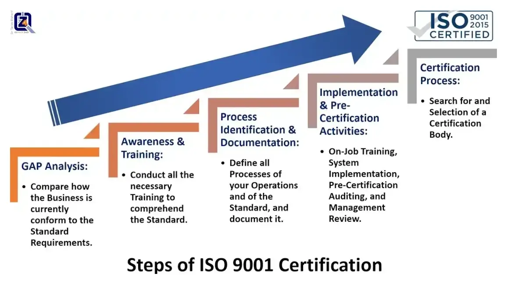

Steps of ISO 9001 Certification


Welcome to the 4Z-Pedia. Many of us have heard about ISO certification and accreditation of some institutions and companies. Many of us have seen the distinctive ISO logo on websites and business platforms. But we may not know the way to get that renowned certification. What must be followed in order to obtain this prestigious accreditation, that refers to the high quality of products or services. Let's learn together more about the stages of implementing the ISO standards and gaining the ISO certification, here as an example for a quality management system (QMS).
Any organization want to implement a QMS must follow these steps:
The international standard, ISO 9001, in its latest version of 2015, represents general requirements for a QMS, which are suitable for implementation to any organization, whatever its type, size, or form. ISO standards are subject to periodic amendments by the international organization for standards. When successfully qualified, any organization can obtain a certificate confirming its commitment to the standards.
Above-mentioned steps generally represent basic steps for qualifying the organization to obtain the ISO certificate. Remains to mention some important details of the accreditation process:

If you are curious to know more about all ISO certification procedures, or need to get information about our ISO Consultancy and Training packages,
Email us today at: support@the4z.com. We are here to make ISO easy for you.
Call 4Z for Quality today at (also on WhatsApp):
+973 3399 5807 or +90 5050 3040 16.
Welcome to the 4Z-Pedia. Many of us have heard about ISO certification and accreditation of some institutions and companies. Many of us have seen the distinctive ISO logo on websites and business platforms. But we may not know the way to get that renowned certification. What must be followed in order to obtain this prestigious accreditation, that refers to the high quality of products or services. Let's learn together more about the stages of implementing the ISO standards and gaining the ISO certification, here as an example for a quality management system (QMS).
Stages of the implementation of a QMS:
Any organization want to implement a QMS must follow these steps:
- Conducting a GAP analysis, through an objective comparison between existing state of the organization, and the requirements of QMS standards. This analysis is usually conducted by specialists, as ours in 4Z for Quality, in cooperation with the employees of the organization. It uses various tools, including “audits”, “personal interviews”, or “questionnaires.” Ultimately, a conclusion is obtained about how far or close the organization is, from desired performance. The most important main output of this analysis, is an accurate identification of potential or real gaps, between the existing system in the organization and the target QMS.
- The higher management of the organization, in cooperation of specialists, develop an executive action plan for the steps and procedures necessary to fill in that gap that was identified in the first step.
- In parallel, the organization must adopt and implement a training program for all employees of the organization, to raise awareness of the requirements of the desired QMS, in order to prepare the organization psychologically and technically for the required change. We at 4Z for Quality, offer excellent workshops and training programs that completely change attitudes at work, foster commitment to improvement, make ISO terms easy, and establish quality principles as a culture within your organization.
- The executive action plan set in the second step, is implemented through employees and experts. The organization's upper management must provide necessary resources to implement this plan.
- After implementing that plan, which is supposed to comply with QMS standards, and after a reasonable period of time, confirming the stability of the new system, the higher management of the organization assigns specialists with appropriate experience, whether from within the organization or from outside, to conduct a comprehensive audit for the implementation of the new system, this audit is usually done systematically, according to a pre-established plan, and using a list known as the check-list, which includes main elements of the QMS standards, and the report is either confirming the conformity, or the non-conformity to the standards.
- Results of audits are usually either "conformance" to requirements of the standards, or "non-conformance" to requirements of the standards of the desired QMS, and here appropriate corrective actions must be taken to clear "non-conformities", with the assistance of higher management of the organization.
- The organization implements processes mentioned in the fifth and sixth steps on a regular basis, in order to maintain a satisfactory performance level for the organization, and in accordance with requirements of the QMS.
“Implementing a QMS includes, conducting a GAP analysis, putting an action plan to address the gap, designing a training program to prepare for the change, executing the action plan, performing an audit for the new system, suggesting a corrective action to remove non-conformities.”
ISO 9001 certification for the QMS:
The international standard, ISO 9001, in its latest version of 2015, represents general requirements for a QMS, which are suitable for implementation to any organization, whatever its type, size, or form. ISO standards are subject to periodic amendments by the international organization for standards. When successfully qualified, any organization can obtain a certificate confirming its commitment to the standards.
Accreditation Steps for ISO 9001:
Above-mentioned steps generally represent basic steps for qualifying the organization to obtain the ISO certificate. Remains to mention some important details of the accreditation process:
- Upper management assigns a representative, who will have power and authority to establish the QMS, follow it up, and communicate with external parties regarding the system. Then, GAP analysis, in accordance with ISO 9001 standards, is immediately started, and upon completion, a report that describes current state, and defines the gap between current performance and the desired performance is issued. The report is accompanied by an action plan to remedy the gap identified in the Analysis.
- Initiating and executing a training program for all employees about the QMS according to ISO 9001 standards.
- Implementing the action plan, finalizing documents, and modifying all operations of the organization to conform to ISO 9001 standards.
- Conducting an internal audit, detecting non-conformities, and correcting them through planned corrective actions.
- Upper management carry out planned periodic reviews and follow-ups, in which the organization’s implementation of the established system is monitored, and any outstanding problems that prevent implementation or proper practice are resolved, in order to assure of the organization’s compliance with the QMS and its requirements contained in the ISO 9001 specification.
- The organization, through its management representative, selects and contracts with a recognized certifying body, and arranges audit and inspection dates.
- Finally, ISO certifying body audits the organization. If the audit is positive, the organization is granted the ISO 9001 certificate, provided that the organization is subject to periodic audits by the certifying body, to ensure the validity of conformity of the organization to the requirements of international standards.
Benefits of Obtaining ISO 9001 Certificates:
- Analyzing and evaluating all the organization's operations according to a recognized international standard.
- Document all procedures and routinely record all operating processes.
- Promoting and enhancing training programs, and improving skills of the organization's employees.
- Introducing new work regulations as needed.
- Focusing on internal and external customer satisfaction.
- Always claim consistency according to the standards, of all products or services you provide, and the performance of employee you hire.
- International recognition and improved image of the organization that attract more customers.
- Conforming to a recognized standard, which advantageous in the local market and international markets.
Obtaining ISO 9001 Certificates at a Glance:

If you are curious to know more about all ISO certification procedures, or need to get information about our ISO Consultancy and Training packages,
Email us today at: support@the4z.com. We are here to make ISO easy for you.
Call 4Z for Quality today at (also on WhatsApp):
+973 3399 5807 or +90 5050 3040 16.